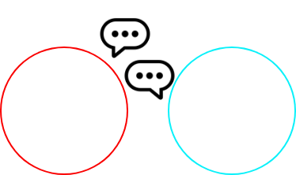
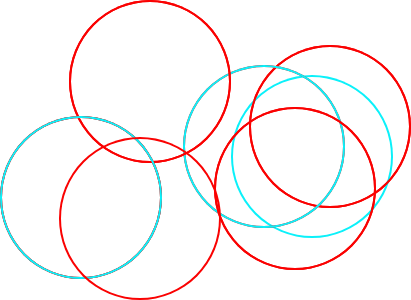
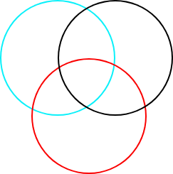
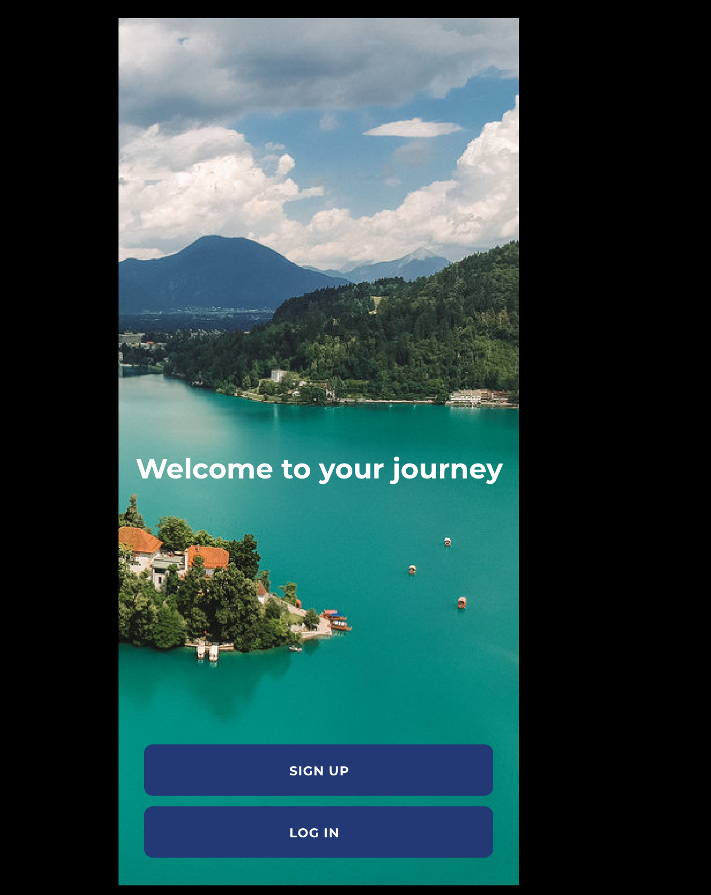
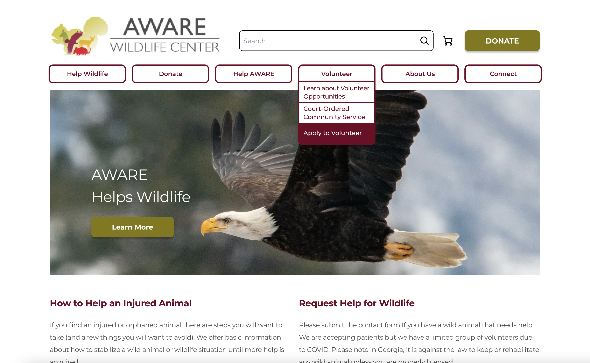

I am a creative working toward certification in the field of UX/UI Design. Having extensive experience in the field of progressive education, I am passionate about social equity, the arts, and accessibility and I hope to bring my skill set to serve these areas within my community and beyond.
My UX Skills

User Interviews
Connecting with users is an innate skill and passion of mine. My approach to user research comes from an angle of empathy for the individual’s experience and a genuine curiosity about user behaviors. The process of ideating post-user research is also very appealing to me.

User Interface Design
Being able to visualize the many layers of a website’s design is a strength of mine. On teams, I enjoy taking on tasks related to sitemapping and prototyping. Making connections between navigation links and different pages is something that comes naturally and enjoyably to me.

Creativity + Aesthetics
I believe that the simplicity and beauty of aesthetics can fully change the outcome of a user’s experience. Seeing the value of both playful as well as natural color palettes in my work is important, each having a place in given contexts.
My Work

OffWeGo Mobile App
Travelers need an easier, safer way to reach their excursions into the natural world. Google maps can only get you so far when looking to route your trip out into nature. Problems arise; bus routes, options such as bicycling or walking, and secluded or hidden trail heads.
OffWeGo is a digital platform specifically designed for outdoor excursions, that factors in all of the traveler’s needs: satellite GPS maps, real-time bus information, along with tips and advice from locals about where to find the hard-to-spot trailheads.
United States Botanic Garden Website Redesign
Users experience frustrations and confusions navigating the United States Botanic Garden website. Some of the links are broken or take users off-site. Many of the links are redundant. A lot of information within the nav bar overwhelms users and discourages interaction with the website.
A redesign of the website includes consolidation of unnecessary information and a simpler, easier to navigate interface.

AWARE Wildlife Website Redesign
Current resources are difficult to find for community supporters who are looking for reliable information when they come in contact with injured wildlife. Since they aren't very knowledgeable on wildlife, they want to know how to help an animal in need through a local organization. A redesign of Aware Wildlife website, including ideating, user research, wireframing, user testing, and prototyping, ensures both the user and the Center's goals are met.